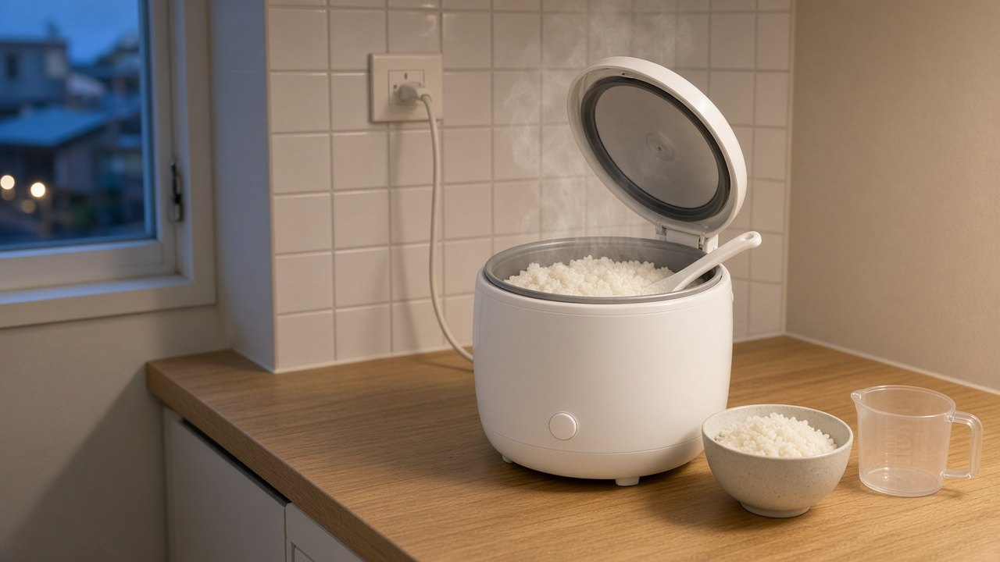

依分類探索


精選比較

套房電鍋怎麼挑？3–6 人份 4 款比較，先算分路瓦數（2026）
套房電鍋先算分路瓦數，再對照 4 款官網規格：功率、內鍋、重量與保固。
NT$990–1,480

租屋吹風機怎麼挑？怕跳電先看瓦數：4 款比較（2026）
租屋怕跳電，先看吹風機瓦數和同迴路電器，再對照 4 款官網規格。
NT$1,049–1,290 （另有 2 款跨價位參照）

套房除濕機怎麼挑？6–9 公升 5 款比較：EF 值、電費、水箱（2026）
套房除濕機先看坪數、EF 值與水箱，再對照 5 款官網規格與電費算法。
NT$4,790–6,990

冬天護手霜怎麼挑？先看純素、無添加人工香料等標示：4 款比較
先看官網有沒有標 VEGAN 純素、無添加人工香料、極度乾燥，再對照點名成分；ml 和 g 不能直接比。
NT$125–149
冬天護唇膏怎麼挑？先看 SPF、成分與容量：4 款比較
先看有沒有寫 SPF、官網點名哪些成分，再對照 4 款護唇膏的容量標示。
NT$109–199 （康是美通路價，最高約為最低的 1.83 倍。建議售價 NT$135–199，約 1.47 倍）

小坪數租屋電暖器怎麼挑？怕跳電先看功率：5 款 2026 冬季比較
小坪數怕跳電，先看瓦數和迴路，再對照 5 款電暖器的品牌官網規格。
NT$1,690–2,299 （另有 3 款跨價位參照）
先懂這幾件事
陶瓷式還是對流式？
陶瓷式多半用風扇吹熱風，適合放在書桌、腳邊；對流式靠空氣循環，適合固定放在同一間房慢慢升溫。
摘自〈小坪數租屋電暖器怎麼挑？〉先看分路額定電流
110V × 15A＝1,650VA。同一分路的電器要一起算。可持續達 3 小時以上的最大電流負載屬連續負載，上限是分路額定的 80%；15A 分路為 12A。
讀電暖器文的分路算例電費自己算
度數＝千瓦 × 小時。600W 開 8 小時約 4.8 度，以每度 2.26 元計約 10.8 元（滿載估算，非夏月每月第 121–330 度）。
摘自〈小坪數租屋電暖器怎麼挑？〉先看有沒有標 SPF
這次 4 款裡，官網寫 SPF15 的有 2 款；另外 2 款本次讀到的頁面沒有列出 SPF。沒標不代表比較差，只是頁面上沒有這項數字。
摘自〈冬天護唇膏怎麼挑？〉容量看 ml 還是 g
這次 4 款標示分成 75 ml、100 ml 與 100 g。毫升和克計量方式不同，不能直接當成相同體積；極致修護的 75 ml 是商品圖與通路名稱標示，頁內文未列。
摘自〈冬天護手霜怎麼挑？〉分路規則出處為《用戶用電設備裝置規則》第 38 條第 4 款。連續負載的定義見第 6 條第 15 款。
我們怎麼挑
先分價位
先列查詢日的官網售價；官網沒有列價時寫「官網未列」，必要時註明單一通路當日價格和來源。
規格對照
核對品牌官網、說明書或賣場資訊，標註查詢日期。
寫清楚差異
從規格說明各款的強項與限制，讓你依使用情境挑選。
編輯依稿件順序排列款式。請按需求比較，售價與庫存以選購當下為準。 看完整說明 →